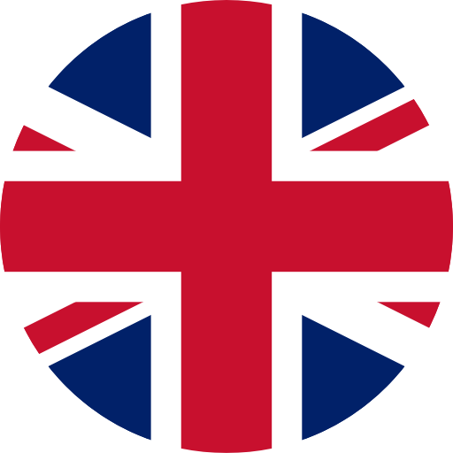

<ion-header [translucent]="true">
  <ion-toolbar>
    <ion-title> NewsRoom </ion-title>
  </ion-toolbar>
</ion-header>

<ion-content [fullscreen]="true">
  <ion-header collapse="condense">
    <ion-toolbar>
      <ion-title size="large">NewsRoom</ion-title>
    </ion-toolbar>
  </ion-header>

  <ion-button (click)="gotToTop()" class="top_button" slot="fixed">
    <ion-icon class="top_icon" name="caret-up-outline" size="large"></ion-icon>
  </ion-button>

  <ion-fab horizontal="start" vertical="top" slot="fixed">
    <ion-fab-button color="primary">
      <ion-icon name="earth-outline" size="large"></ion-icon>
    </ion-fab-button>
    <ion-fab-list side="end">
      <ion-fab-button color="dark" (click)="loadNewsFr()">
        
      </ion-fab-button>
      <ion-fab-button color="dark" (click)="loadNewsUk()">
        
      </ion-fab-button>
      <ion-fab-button color="dark" (click)="loadNewsDe()">
        
      </ion-fab-button>
      <ion-fab-button color="dark" (click)="loadNewsUs()">
        
      </ion-fab-button>
      <ion-fab-button color="dark" (click)="loadNewsRu()">
        
      </ion-fab-button>
      <ion-fab-button color="dark" (click)="loadNewsJp()">
        
      </ion-fab-button>
    </ion-fab-list>
  </ion-fab>

  <div id="container">
    <strong>Ready to create an app?</strong>
    <p>
      Start with Ionic
      <a
        target="_blank"
        rel="noopener noreferrer"
        href="https://ionicframework.com/docs/components"
        >UI Components</a
      >
    </p>
  </div>
</ion-content>
